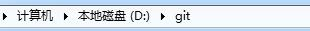
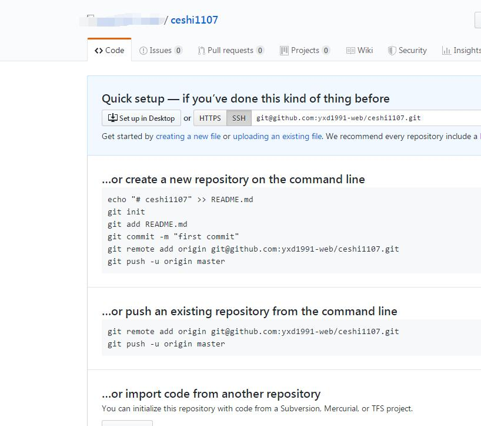
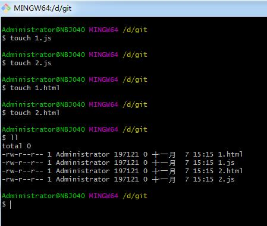
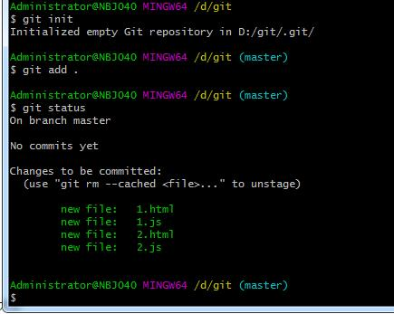
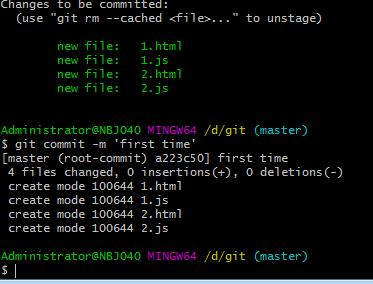
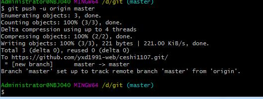

原文出处:本文由博客园博主鱼吃鱼罐头提供。
原文连接:https://www.cnblogs.com/yxd000/p/11812159.html
原文连接:https://www.cnblogs.com/yxd000/p/11812159.html
本次接着上次的来介绍版本控制系统，这个讲到的将是Git与Github，说一下什么是Git，什么是GitHub？他们之间的关系是什么？
1、Git 是代码管理的工具
2、GitHub 是基于Git实现的代码管理的平台。
这样就比较清楚两个不同的作用了，Git更多的是在本地进行代码的存储和管理，而GitHub是一个平台，我们可以将存储管理的代码在GitHub中进行上传并管理和和存储，
GitHub更像是一个服务器。话不多说，开始讲解如何使用这两个工具。首先下载安装的部分，这里面不进行过多的说明，默认大家都己经安装成功了，同时GitHub也是
默认的大家已经注册成功了，安装git和注册GitHub在以前已经进行详细的说明了，直接开始详细的操作了。
打开文件后，在D盘已经新建一个Git文件夹用来进行相应的操作，目前文件夹里面还没有东西，如图：

同时我们已经注册好的GitHub账号里也新建一个仓库，来进行相应的上传使用。如图所示：

一切准备就绪以后，开始具体的操作了，通过touch 1.js等新建出一些文件，通过ll命令显示文件，如图

先git init 初始化本地仓库
通过命令git add . 将所有的文件放入暂存区，再通过git status看下当前的状态

此时这些文件都在暂存区，通过git commit -m “first time”来提交到本地仓库中，如图：

保存到仓库后，开始进行远程操作了，因为我们自己已经建立好仓库了，不用再重复建立
只需要如下的代码：
git remote add origin git@github.com:yxd1991-web/ceshi1107.gitgit push -u origin master
可以与远程的GitHub仓库进行连接了，如图所示的效果：

整个流程已经完成了！